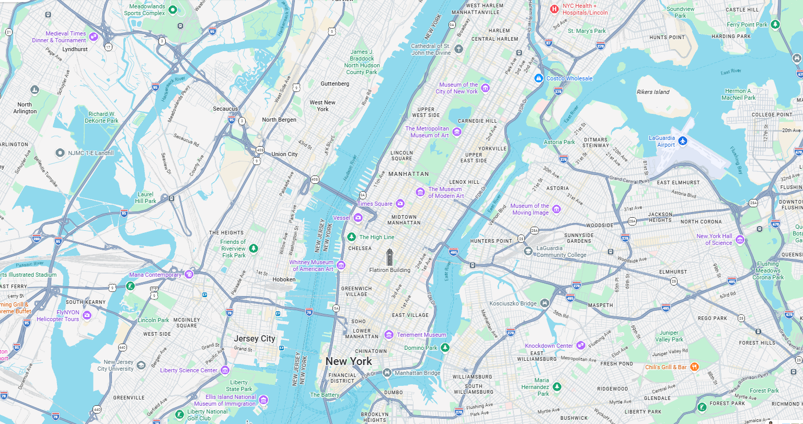

Explore New York One Landmark At A Time
Follow a carefully crafted route through the city's most iconic attractions.
Times Square
Step into the glow of Broadway screens, street performers, and the nonstop rhythm that makes Midtown feel alive at every hour.
Empire State Building
Ride upward for sweeping city views, from the Hudson River to the bridges, rooftops, and avenues stretching across Manhattan.
Central Park
Slow the pace with tree-lined paths, lake views, quiet lawns, and the calm side of New York tucked between towering streets.
Rockefeller Center
Stop by the plaza for Art Deco details, seasonal energy, and a classic Midtown view surrounded by shops and towers.
Grand Central Terminal
Walk beneath the famous celestial ceiling and feel the rush of a landmark that still moves New York every day.
The Metropolitan Museum of Art
Explore one of the world's greatest museums before stepping back out toward Fifth Avenue and the edge of Central Park.
The High Line
Follow gardens, public art, and city views along a raised railway path that turns the West Side into a slow scenic walk.
One World Observatory
Head downtown for a powerful skyline moment, with glassy views over the harbor, bridges, and Lower Manhattan.
Statue of Liberty
Cross toward the harbor for the city's most symbolic welcome, with ferry views that frame Manhattan from the water.
Brooklyn Bridge
End the route above the East River, where the bridge cables, city lights, and Brooklyn skyline make the perfect final chapter.

1 2 3Follow the numbered pins on the map, then match each number with the landmark list below.
Nearby add-ons
Quick travel guide
Start in Midtown, then reach the bridge near sunset.
Easy cafes and quick bites between High Line and downtown.
Finish with bridge views and city lights across the river.
Use the subway for long jumps and walk the scenic parts.
Midtown icons → park and museum → west side walk → downtown skyline → harbor and bridge finish